2.3 cont.
Multiplication rule
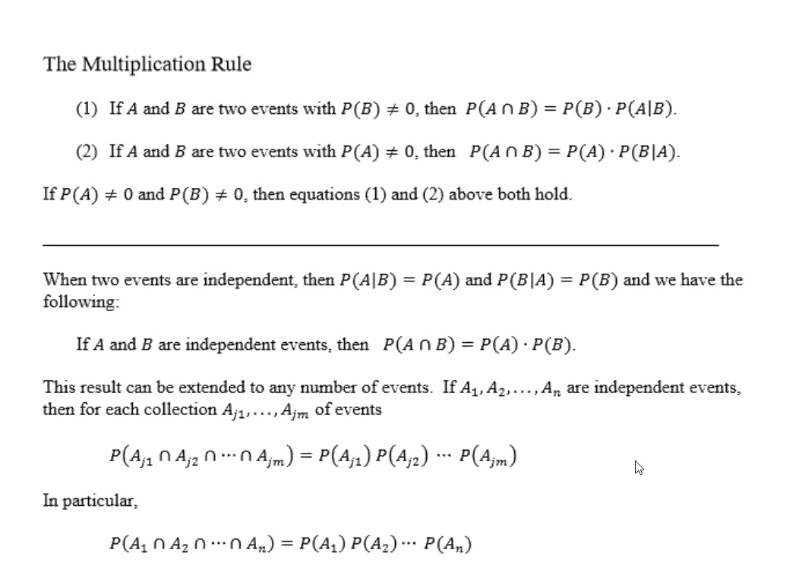
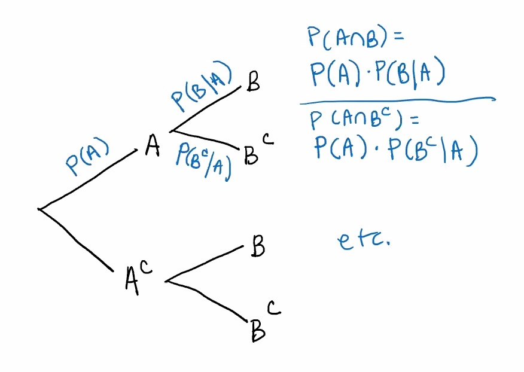
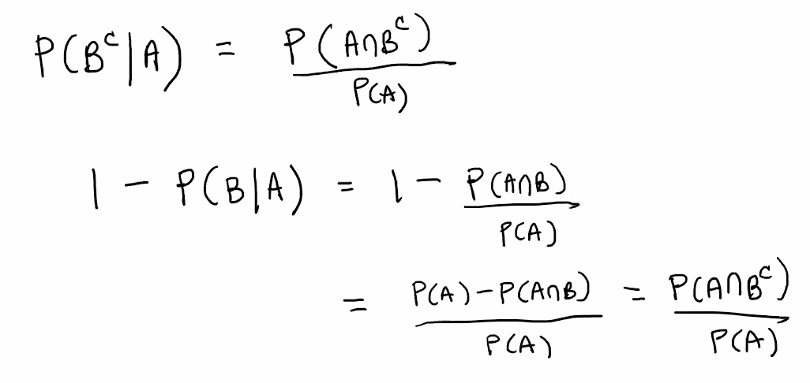
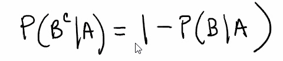
Mutually exclusive events are not usually independent, we are usually working with events that have non-zero probabilities.
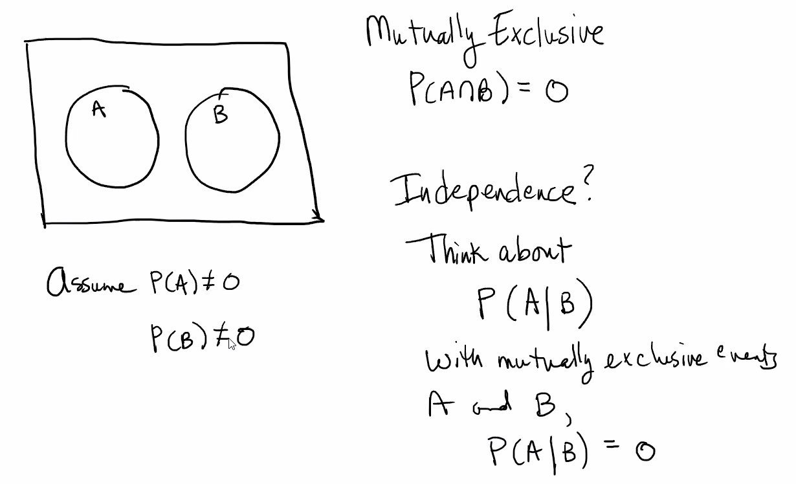
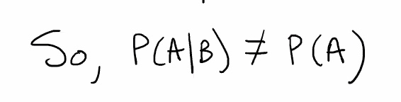
e.g.
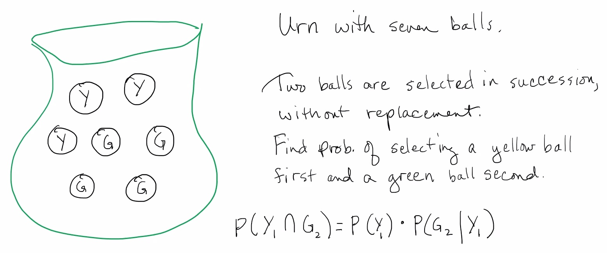
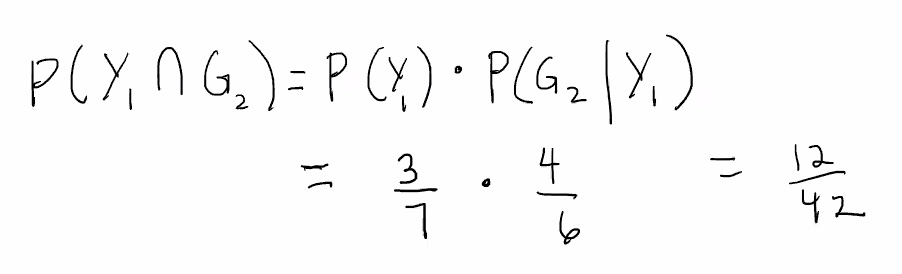
Side note: this can be thought of as a tree also
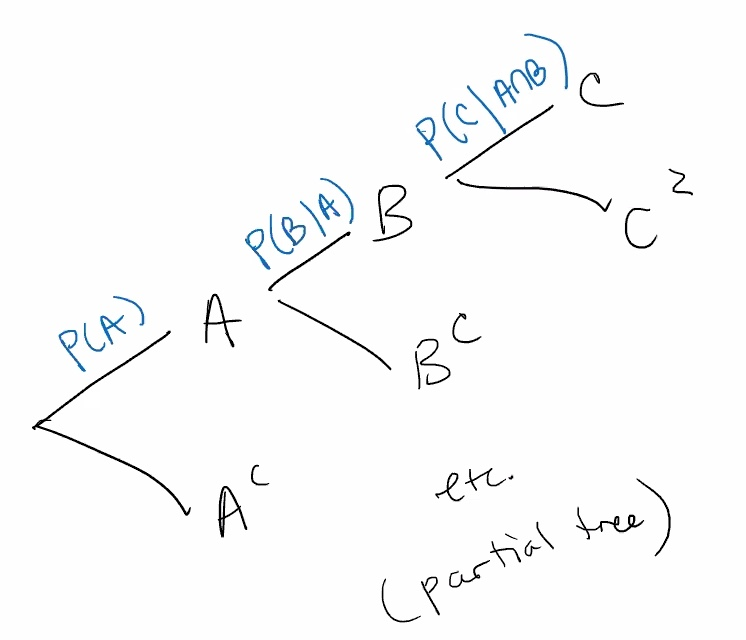
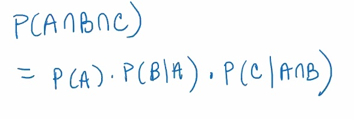
Assume 3 balls are selected in succession without replacement. Find the probability of selecting a yellow ball first, green ball second, and green ball third:
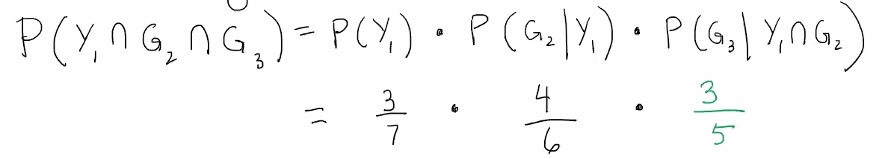

Recall:
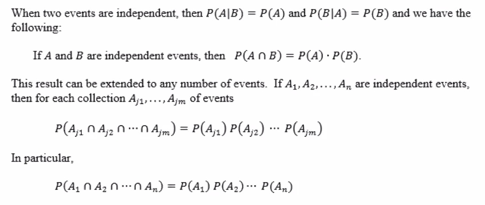
Now suppose three balls are selected in succession, with replacement. Find the probability of selecting a yellow ball first, a green ball second, and a green ball third:
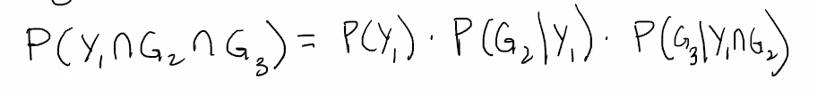
But we don't need to think of it this way because they are independent.
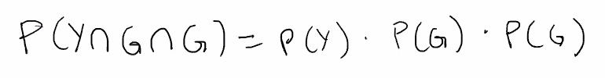
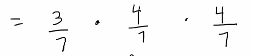
e.g.
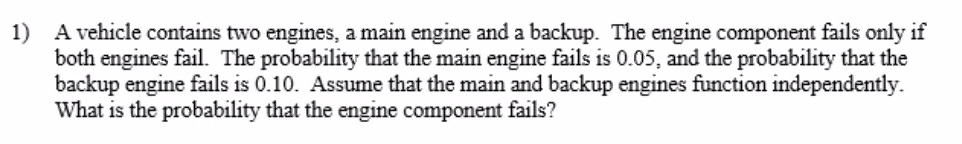

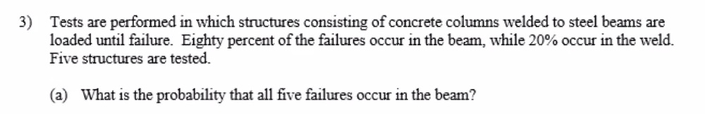
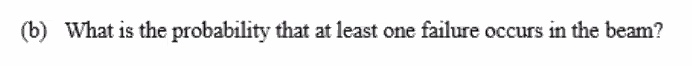
Law of total probability and Bayes' Rule
Stat50 2.3 Law of Total Probability and Bayes' Rule.pdf
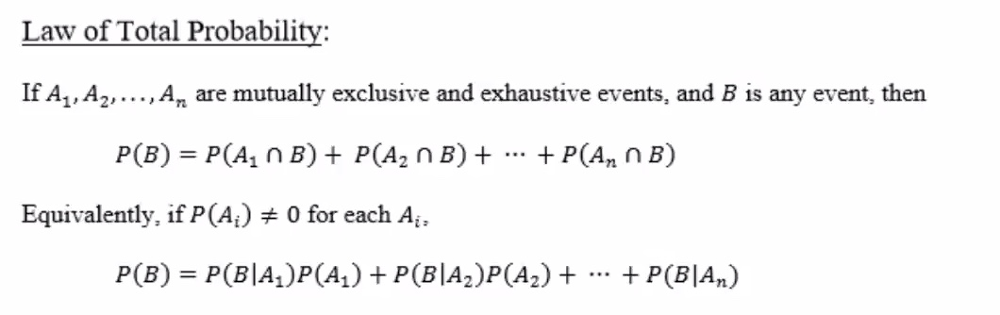
Exhaustive means that the union of all of the events covers the entire sample space.
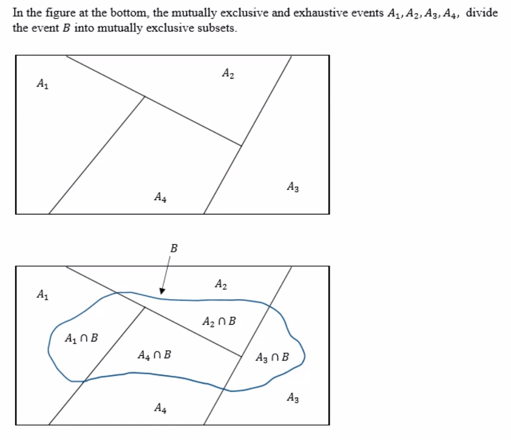
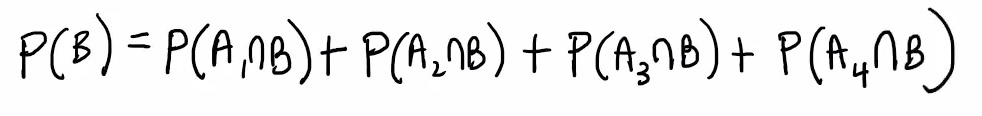